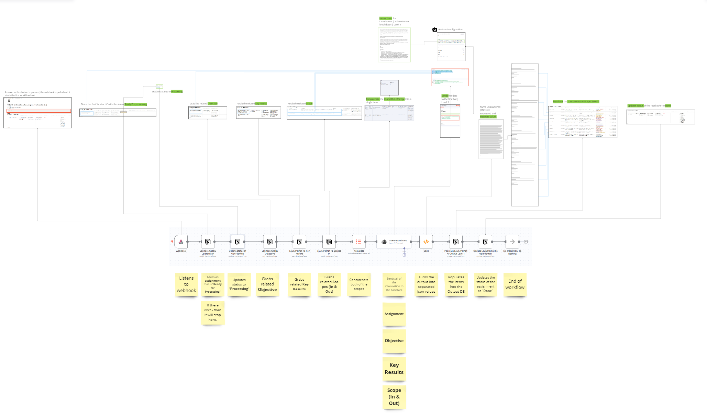

During the Realisation phase, I focused on transforming the proposed concepts into a working system by building the N8N logic, setting up the Notion database, and integrating OpenAI assistants. These tools were essential for creating a functional prototype that serves as a solid foundation for the proof of concept I am working on. This phase demonstrates how generative AI can enhance workflow processes, providing a hands-on example of AI-driven automation in project management. Here, I'll walk you through the system I developed, detailing each step and the rationale behind the choices made. Specifically, I developed Breakdown Bot 1 and Breakdown Bot 2 to dissect projects into actionable tasks, showcasing the potential of AI-driven automation.
With the low-code tool N8N, I could easily create these systems and ensure they adhered to the system requirements defined in the Specification & Design phase. To achieve this, I made sure the system was transparent and easy to use. I implemented functions that allowed users to see the status, change it, and also alter it. Despite being a low-code platform, N8N can sometimes be challenging due to certain complexities in passing data through the nodes. Fortunately, I received assistance from coworkers whenever I encountered difficulties, ensuring the system's smooth functionality. For more details, refer to the N8N and Notion Documentation.
Initially, understanding all functionalities in Notion was challenging, but once mastered, it facilitated effective database management and integration with webhooks for automation triggers. Notion's comprehensive features allowed for easy implementation in this prototype. Future complex implementations might require more detailed research. For more details, refer to the N8N and Notion Documentation.
OpenAI assistants were integrated to perform specific tasks such as data analysis, content generation, and providing actionable insights. These AI-driven assistants leveraged large language models (LLMs) to process and analyze large amounts of information, offering valuable support in breaking down complex tasks and enhancing overall productivity. I chose OpenAI's GPT-4 model because it is the most capable LLM out there right now. The smartest isn't always needed in this system, but GPT-4 does really well at understanding concept, thus making it a better candidate for dissecting those concepts as well. . It is possible to use another model for further dissection. Next to that, I also did a lot of prompt engineering and used the chain of thought method for the instructions/prompting for these agents. This led to a really good, structured, and desired output. For more details, refer to the OpenAI Assistants Documentation.
The system diagram below illustrates how N8N and Notion work together, with OpenAI assistants integrated to enhance the overall functionality. The diagram shows the data flow and interactions between different components, highlighting how tasks are automated and managed. The screenshots of tables in Notion are all of the API calls. The screenshot in the middle is of the n8n environment, this is quite a linear process of the first Project Breakdown Bot. The sticky notes at the bottom are all of the actions happening within the n8n workflow for the first bot. System Diagram.
The Realisation phase successfully demonstrated the practical benefits of using low-code platforms like N8N and Notion, along with AI-driven assistants, in automating and enhancing workflow processes. Notion provided a robust and user-friendly interface for database management, while N8N facilitated seamless automation and task management. The integration of OpenAI assistants added significant value by processing and analyzing data, generating content, and breaking down complex tasks into manageable steps.
Key takeaways from this phase include:
Despite some initial challenges in configuring the databases and ensuring consistent model performance, the overall outcome was positive. The AI models proved to be effective in dissecting projects into smaller tasks, although occasional inconsistencies required adjustments to the prompts and processing code. Future improvements could focus on further refining the automation processes and exploring additional features within Notion and N8N to enhance scalability and robustness.
In the upcoming Evaluation phase, I will evaluate the effectiveness and efficiency of the implemented solutions through rigorous testing. This will involve comparing the AI-generated task breakdowns with real-world projects and feedback from team members. The goal is to ensure that the workflows are not only functional but also practical and reliable in real-world applications.